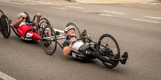

B: Un "tándem". El ciclista con discapacidad visual ocupa el asiento trasero, mientras que su acompañante sin problemas de visión guía la bicicleta C: Bicicleta convencional adaptada para un corredor amputado H: "Hand bike" del tipo ATP3 (diseñada para conducirse con el tronco erguido) T: Triciclo durante una prueba contra-reloj del campeonato de Francia Salida de la prueba en ruta de "hand bike" (Campeonato de Francia, 2014) El paraciclismo (su denominación oficial en estamentos deportivos es ciclismo adaptado1) es un deporte que deriva del ciclismo, específicamente adaptado para facilitar su práctica por ciclistas con discapacidades físicas que les impiden el uso de bicicletas convencionales. Su reglamentación depende de la Unión Ciclista Internacional desde el 7 de febrero de 2007,2 cuando recibió la encomienda del Comité Paralímpico Internacional. En este deporte se utilizan cuatro tipos de vehículos (tanto en categoría masculina como femenina), todos ellos accionados mediante pedales y transmisión por cadena:
© Página realizada por M.L.S. en 2018.